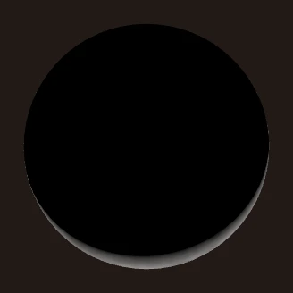
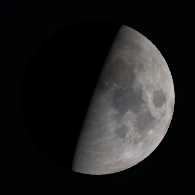
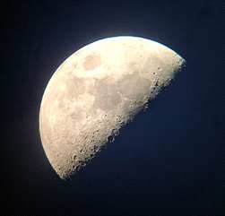
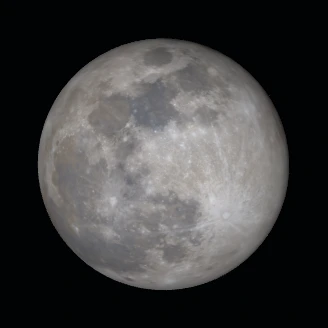

서울에서 본 달
서울 하늘을 촬영한 세 장의 사진을 같은 날짜의 시뮬레이션과 비교해 보세요. 달의 어느 쪽에 햇빛이 닿았을까요?
초승달
고도 16.2° · 밝은 면 5.6%


두 화면 모두 밝은 호가 달의 아래쪽을 감쌉니다. 서울시 사진에는 촬영 날짜만 공개되어 있어 같은 날 저녁 19시 45분을 비교 시각으로 골랐습니다. 달이 지는 동안 호의 기울기도 달라집니다.
반달 상현 무렵
고도 24.8° · 밝은 면 54.0%


밝은 면과 어두운 면의 경계가 원반의 중앙 근처를 지납니다. 학생이 사용한 망원경의 천정프리즘은 좌우를 뒤집습니다. 사진은 촬영 방향 그대로이며, 비교 시각은 야간 관측이 이루어진 날의 20시로 골랐습니다.
보름달
고도 46.6° · 밝은 면 99.5%


촬영자가 기록한 21시 40분경에 맞췄습니다. 양쪽에서 둥근 윤곽 안의 어두운 달의 바다를 찾아보세요. 원 기사에는 같은 달을 광각과 망원으로 찍은 사진도 함께 실려 있습니다.
같은 순간, 다른 배율
초승달 실습에서 시간을 멈추고 서울 하늘에서 우주까지 연속해서 축소한 화면입니다. 화면에서 두 손가락을 오므리거나 마우스 휠을 아래로 굴려 보세요. 시야 단계 32에서 서울의 1배 하늘을 지나고, 0까지 줄이면 같은 시각의 태양·지구·달이 한 화면에 들어옵니다. 직접 열어 줌을 움직인 뒤, 같은 배율에서 며칠 뒤로 날짜를 바꿔 보세요. 어느 조작에서 밝은 면이 달라지나요?
우주에서 시간을 흘린 뒤 서울로 돌아오면
우주 조망에서 달의 밝은 쪽이 태양을 향하는지 보세요. 3월 31일 저녁에서 4월 5일 저녁까지 재생한 뒤 서울로 확대하면, 서울 관측자가 햇빛을 받는 반구를 바라보는 각도에 따라 초승달에서 반달로 바뀝니다.